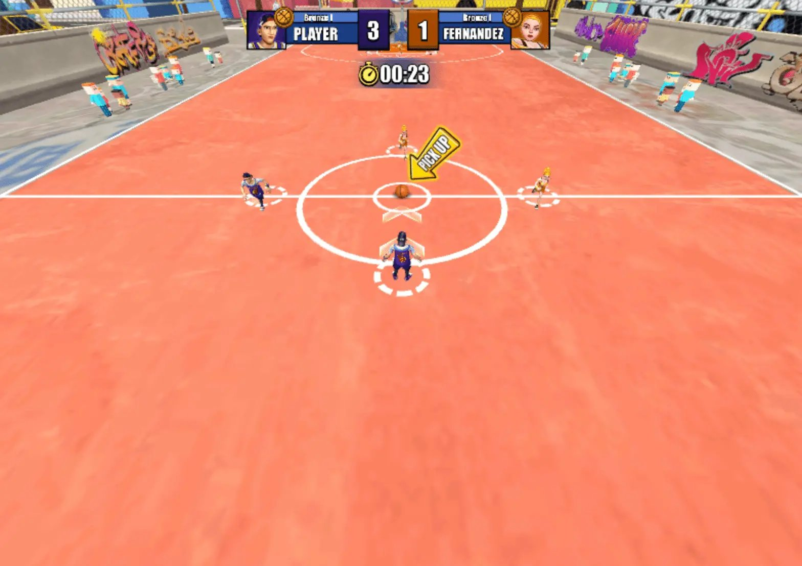
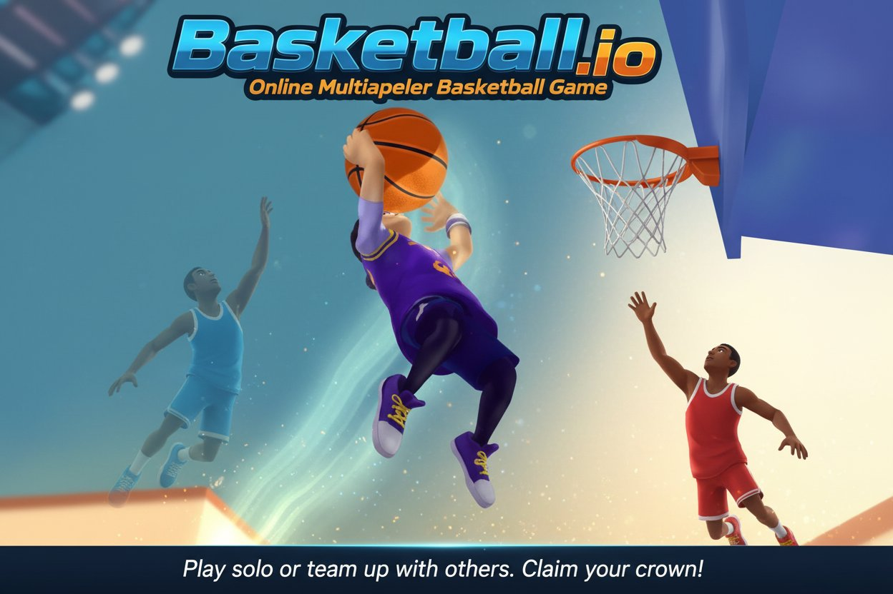

Introduction
BBall.io is a fast-paced, 3D multiplayer basketball game that brings the thrill of the court directly to your browser. Unlike traditional sports simulators, this game drops you into small-sided, intense matches where you control a single player to sprint, dribble, pass, and dunk against live opponents. What makes it unique is its seamless blend of accessible controls and deep competitive gameplay, featuring 12 unlockable characters, 10 custom basketballs, and 4 distinct courts. Players love it for its responsive mechanics, vibrant graphics, and the ability to climb global rankings through progressive tournament stages. Whether you are aiming for a flashy slam dunk or executing a crucial steal, BBall.io delivers endless, fast-paced arcade action that keeps you coming back for more.
Getting Started

To start your journey in BBall.io, begin by selecting your favorite character, customizing your basketball, and choosing one of the four distinct courts to compete on. The game offers intuitive controls tailored for both desktop and mobile. On a keyboard, use the WASD or Arrow Keys to move your player around the court. For mouse users, click and drag to dribble, pass, and shoot. Mobile players can simply tap and drag on the screen for movement and ball handling. Your primary objective is to score points by aiming for the basket and executing slam dunks. During matches, you will also need to master basic defensive mechanics, such as stealing the ball by moving close to opponents and timing your actions correctly. Additionally, you can shield your teammates by positioning your player between them and the opposing team. Practice these fundamental movements and interactions in your early matches to get a feel for the game's fast, responsive pace before entering the competitive tournament stages.
Basic Tips
Mastering BBall.io requires a solid foundation of basic skills. First, always keep your eyes on the ball and your opponent; use your movement to steal the ball by closing the distance and timing your reach perfectly when they dribble. Second, utilize the shielding mechanic effectively. When a teammate has the ball, position your character directly between them and the nearest defender to block steals and create passing lanes. Third, practice your mouse or touch drag accuracy for shooting. A smooth, deliberate drag will result in a more accurate shot or a powerful slam dunk, whereas erratic movements might cause a turnover. Fourth, utilize the small-sided court to your advantage. Since the space is limited, quick lateral movements using your WASD or arrow keys will help you dodge defenders and find open space. Finally, do not rush your shots; wait for the right moment when the basket is clear to maximize your scoring efficiency in the early tournament stages.
Advanced Strategies

As you progress through the Quarter and Semi-Finals, basic mechanics must evolve into advanced strategies. First, master the art of the decoy run. Instead of always demanding the ball, use your movement to draw multiple defenders away from the hoop, creating a wide-open lane for a teammate to score or dunk. Second, exploit the court boundaries. Because BBall.io features small-sided courts, you can use the edges to trap opponents. Force an offensive player toward the baseline where their passing angles are severely limited, making it much easier to time a crucial steal. Third, optimize your tournament progression by studying opponent patterns. In the Eight Final and beyond, live opponents will have predictable dribbling habits. Anticipate their crossover or sprint direction to intercept passes. Lastly, manage your positioning for defensive transitions. Immediately after a missed shot or a steal, sprint back to protect the paint, ensuring you are always ready to shield your teammates or contest the next dunk attempt.
Pro Tips

To dominate the Final stage and climb the global ranks, you need expert-level execution. First, customize your loadout strategically. While all 12 characters and 10 basketballs look unique, focus on how their visual size and ball physics affect your personal aim and collision detection during tight dribbles. Second, perfect the micro-steal. Instead of just running at an opponent, use tiny, precise adjustments in your movement to poke the ball away without committing your full body and getting bypassed. Third, master the psychological fake. Use your mouse or touch drag to initiate a shooting motion, forcing the defender to jump or shift their weight, before quickly dragging to pass to an open teammate for an uncontested dunk.
🎮 Controls & Mechanics Deep Dive
If you want to dominate the court in Bball.io, you need to understand exactly how your player moves and interacts with the environment. The default control scheme uses WASD or the Arrow Keys for movement, while the Mouse controls your camera and aiming direction. Left Click is your primary action button for passing and shooting, and Right Click or the Spacebar triggers your sprint and dunk mechanics.
What really separates the rookies from the veterans is understanding the game's movement physics. Bball.io doesn't use instant stop-and-go mechanics; there's actual momentum at play here. If you're sprinting full speed and try to make a sharp 90-degree turn, you'll skid and lose a fraction of a second. Mastering your turning radius is crucial when you're being chased down for a fast break. You need to start braking slightly before your turn to maintain control and keep your dribble alive.
Collision mechanics are also a massive part of the gameplay. The hitboxes are surprisingly forgiving, but bumping into an opponent while they have the ball can trigger a turnover. However, if you're the one holding the ball and you slam into a stationary defender, you'll likely fumble it. This means you can't just run in a straight line; you have to use juke movements to shift your hitbox and avoid direct collisions.
Scoring mechanics go beyond just clicking near the hoop. Standard shots inside the arc are worth 2 points, while shots from beyond the 3-point line net you 3. But the real crowd-pleaser is the dunk. To execute a dunk, you need to be sprinting, have enough stamina, and be on a direct collision course with the rim. Dunks are guaranteed 2-pointers and can't be blocked, but they leave you completely vulnerable to steals if you miss the angle.
🎯 Game Modes Breakdown
Bball.io offers a few distinct ways to play, each requiring a slightly different mindset. Knowing the rules and objectives of each mode will help you maximize your playtime and unlock those sweet cosmetics faster.
- Quick Match (Free For All): This is the bread and butter of Bball.io. You're dropped into a server with up to 8 other players, and it's every man for himself. The objective is simple: score the most points before the timer runs out. There are no teammates to pass to, so expect a lot of chaotic ball scrambling and aggressive defense. It's the best mode for grinding out character and basketball unlocks.
- Team Hoops (2v2 or 3v3): Here, the game pairs you up with random players or friends. Communication and passing are absolutely mandatory in this mode. The court feels a lot more crowded, so spacing is key. You can't just iso-ball your way to victory; you need to run pick-and-rolls and swing the ball to find an open shooter. First team to reach the target score wins.
- Ranked Pro League: Think you've got what it takes? Ranked mode puts you into an ELO-based matchmaking system. The rules are the same as Quick Match, but the stakes are higher. You'll face much sweatier opponents who know every animation cancel and screen setup. Winning matches increases your rank, while losing drops it. Play this when you're warmed up and focused.
- Shootaround (Practice Mode): No opponents, no timers, just you and the hoop. This mode is essential for learning the shot timing mechanics and testing out the different ball physics. Some of the unlockable custom basketballs have slightly different bounce and weight feels, so use this mode to get comfortable with your new gear before taking it into a live match.
🚀 Advanced Strategies & Pro Tips
Once you've got the basics down, it's time to elevate your game. Bball.io has a surprisingly high skill ceiling, and the top players rely on mind games, stamina management, and spatial awareness to crush the competition.
Master the Pump Fake: The most overpowered tool in your arsenal isn't your speed; it's the pump fake. When you're driving to the hoop and a defender rushes you, hold the shoot button just long enough to trigger the fake, then immediately release and drive past them. Defenders in Bball.io are highly reactive, and a well-timed fake will make them jump or lunge, leaving them completely out of position.
Stamina is Your Lifeline: Sprinting drains your stamina bar, and when it hits zero, your player heavy-footed and slow. Worse, you can't dunk on empty stamina. Don't hold down the sprint button continuously. Use it in short, calculated bursts to blow past a defender or recover on defense, then let it recharge. Managing your stamina is the difference between a clutch endgame dunk and getting easily stripped.
Play the Angles on Defense: When you're on defense, don't just stare at the ball handler. Position yourself slightly off to the side, cutting off their direct path to the basket. Force them to the sidelines or the baseline where their movement options are limited. If they try to sprint past you, your positioning will naturally cause a collision, resulting in a steal.
Exploit the Paint: A lot of beginners just camp directly under the hoop. If you want easy layups, use the corners. Draw the defense toward the center of the paint, then quickly pass or relocate to the corner for an uncontested shot. If you're playing FFA, let the other players clog up the middle while you pick them apart from the perimeter.
❓ Frequently Asked Questions
Is Bball.io completely free to play?
Yes! Bball.io is a browser-based .io game, meaning it's 100% free to play with no upfront costs. There are no mandatory microtransactions, though you may see optional ads for bonus rewards depending on the portal you play on.
Can I play Bball.io on my phone or tablet?
Absolutely. The game is fully optimized for mobile browsers and features touch controls. However, because it's a 3D game that requires precise camera control and quick reactions, we highly recommend playing on a PC with a mouse and keyboard for the best competitive experience.
How do I unlock new characters and basketballs?
You unlock cosmetics by earning XP. Every time you score points, win matches, or complete daily challenges, you gain XP. As your overall account level increases, new characters, courts, and basketballs are automatically added to your inventory. Just keep playing and scoring!
Why do I keep losing the ball when I run into opponents?
This comes down to the game's collision and momentum mechanics. If you are sprinting at max speed and crash directly into a defender who is standing still or moving toward you, the physics engine will favor the defender, causing a turnover. Slow down, use juke moves to change your angle, or sprint past them at an angle rather than head-on.
Is there a way to play in a private match with my friends?
Yes, you can create a private lobby. When you're in the main menu, look for the "Create Private Room" option. This will generate a unique room code that you can share with your friends. They just need to enter the code in the "Join Room" menu to drop into your private server.
Conclusion
BBall.io offers an incredibly fun and competitive 3D basketball experience that tests your reflexes and strategic thinking. By mastering the controls, utilizing team shielding, and executing well-timed steals and dunks, you can conquer every tournament stage. Jump into the browser, customize your favorite character, and start climbing the global rankings today. The court is waiting for the next champion!